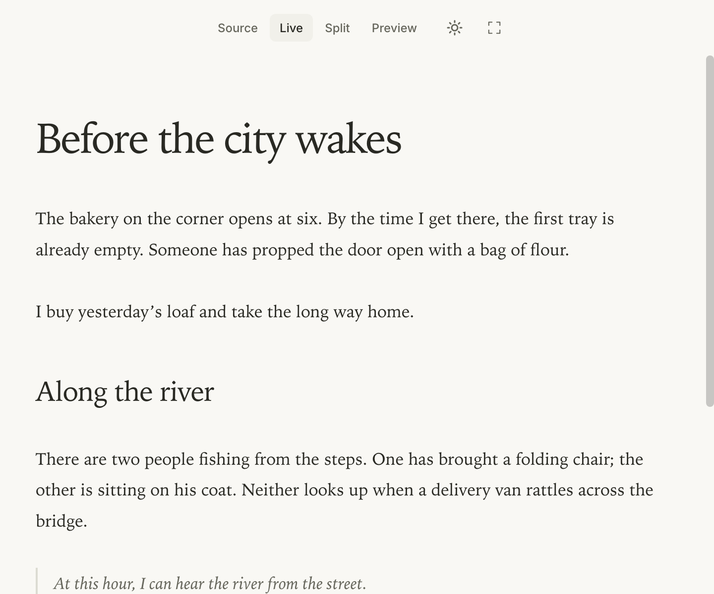
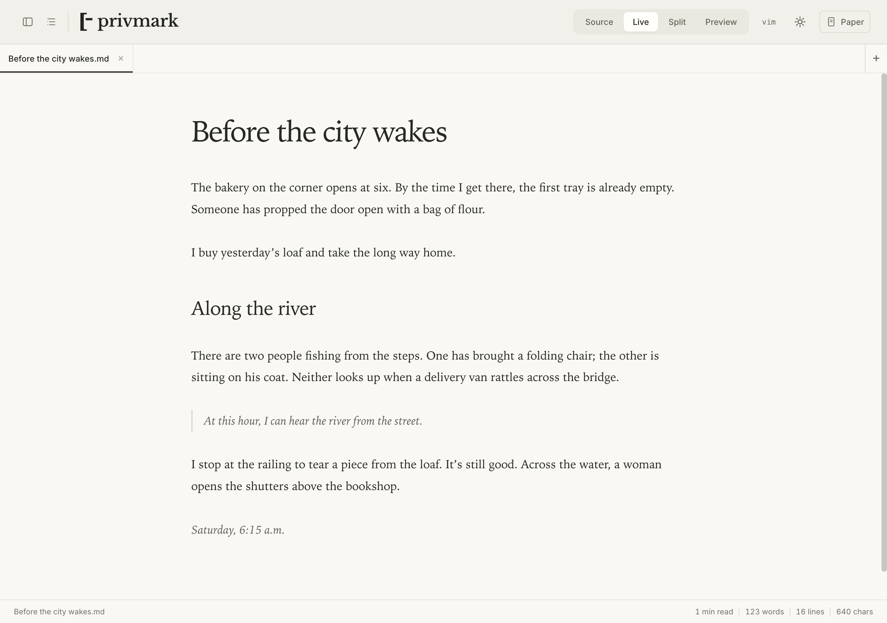

01 / Space to write
Leave the menus behind.
Slim paper mode hides the tabs and panels. For longer sessions, focus mode dims the surrounding text and typewriter mode keeps your current line centred.
Markdown for Mac, Windows & Linux
Write in Markdown and see the formatting as you go. Your drafts stay on your computer, ready to pick up whenever you are.
Free to use · No account needed
Inside the editor

No tracking or analytics
Works offline
Ordinary Markdown files
The editor
Switch between the page and its Markdown source as you work. You can keep both in view, too.

01 / Space to write
Slim paper mode hides the tabs and panels. For longer sessions, focus mode dims the surrounding text and typewriter mode keeps your current line centred.
Take the long way home.
Bring a notebook.
# Saturday notes Take the *long way* home. Bring a **notebook**.
A Markdown sample · Try switching views
02 / Formatting and export
Live view formats headings, lists and emphasis as you type. When you’re ready to share a draft, export it as a PDF, HTML page or Word document.
Choose light or dark, adjust the text size and pick a document theme that suits what you’re working on.
Keep drafts in folders you already use. Quick Open finds files by name; the outline takes you straight to a heading.
Add a table, a footnote or an equation. PrivMark also renders Mermaid diagrams and Markdown slide decks.
Privacy
You don’t need an account or an internet connection to write. PrivMark saves ordinary Markdown files on your computer, so you can open them in another editor whenever you like.
Local AI · Pro
Select a passage and ask for a shorter version, a different tone or a summary. Read the result in your document, then keep it or revert to what you wrote.
Uses Ollama and a model you install.
With Ollama running locally, your text stays on your computer.
Every Saturday morning I go to the market, and I always end up buying more tomatoes than I can use.
Every Saturday, I buy too many tomatoes at the market.
Pricing
Try the Pro features for 14 days, with no card required.
Freeforever
The full editor, including themes and exports.
Download the app and open any Markdown file.
$9one-time
Adds writing assistance through Ollama.
The trial is available now; Pro purchases open soon. You’ll need Ollama and a local model installed.
Your documents stay editable when the trial ends.
Pro licences are verified offline. 14-day refund policy for purchases.
A few basics help: # Heading makes a heading, *text* adds italics and - item starts a list. Live view shows the formatting as you type. Switch to Source or Split whenever you want to see the markup.
Yes. You can write, edit and export without an internet connection. Automatic update checks can be turned off in Settings → Updates. Pro licences are checked on your computer and don’t need an activation server.
Install Ollama on your computer, download a model and open PrivMark’s AI panel. You’ll need Pro or the included 14-day trial. Downloading a model requires internet access; running it locally doesn’t. Speed and memory use depend on your model and computer.
You can keep writing, using themes and exporting documents for free. The AI features need a Pro licence once the trial ends. Pro purchases open soon at a one-time price of $9, covering all PrivMark 1.x releases.
Yes. Open a Markdown file or a whole folder; there’s nothing to import or convert. PrivMark also has Vim keybindings, a VS Code extension and command-line tools for rendering documents, reading outlines and running Pro AI commands.
Releases include SHA256 checksums. Windows installers are signed by Wolfberry AB; macOS builds are signed and notarized. If you disable automatic updates, follow the security advisories or release feed. Report a vulnerability to hello@privmark.app; we aim to acknowledge reports within 72 hours. Machine-readable contact details are in security.txt.
Download
Start a new draft or open one you’ve been meaning to finish.
Free editor + 14-day Pro trial. No account or credit card required.
All releases, portable versions & checksums · Also available for VS Code